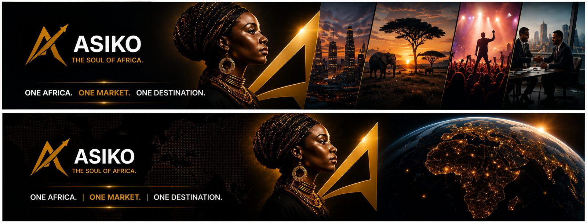
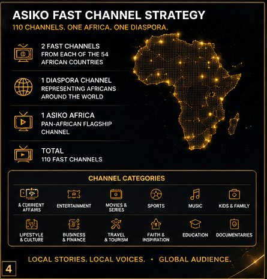

Asiko TV is a Media Icons Africa property — a free, ad-supported streaming home bringing together the continent's independent broadcasters, creators and stories on one platform.
Africa's stories are being told across hundreds of small, disconnected channels and platforms. Asiko TV brings them together — a single, free destination where a viewer in Lagos, London or Lusaka can find Nollywood, news, faith, comedy, sport and culture, all in one place, on any screen.
For channel owners and creators, that means a shared audience of millions instead of a fragmented one. For brands, it means one platform to reach a continent.


"We're not building another streaming app — we're building the shared home African broadcasters and creators never had."
Media Icons Africa, on the Asiko TV visionAsiko TV is built and operated by Media Icons Africa (Media Icons Limited) — Lagos-based specialists in Nollywood monetisation, media ad sales, sponsorships and OTT/FAST channel partnerships, with over three decades of experience across Nigeria's media, broadcasting and advertising industry.
Media Icons Limited
Managing Director: John Idani Upah (ARPA)
Lagos, Nigeria
john.upah@mediaiconsltd.com · +234 803 538 2590
Whether you're a broadcaster, a creator, or a brand — there's a place for you on Asiko TV.